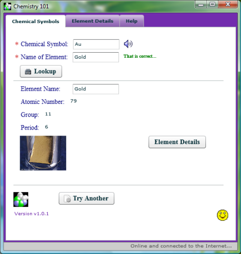
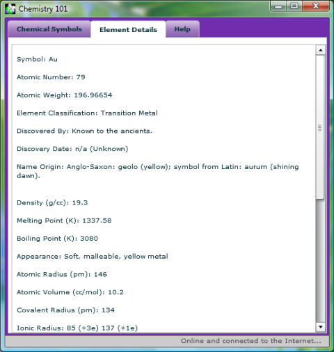
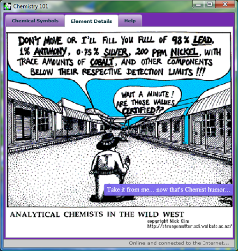

This Chemistry 101 application is an example combining some easy Flex techniques (using some custom AS3 classes to represent the Periodic Table of Elements, playing a dynamic MP3 (of the pronunciation of each element), using a custom preloader, and managing the content display based on Internet connectivity), as well as a ColdFusion CFC function that uses the CFHTTP tag to screen-scrape element details. Atomic Numbers, Groups and Periods, Oh My!
Download the Chemistry Quiz - AIR Example: Chemistry Quiz - AIR Example
You will need the AIR Runtime
Feel free to use this application as a study-tool to test your knowledge of the chemical elements.
Some interesting things I explored during this project:
Screenshots of the AIR application are shown below:


